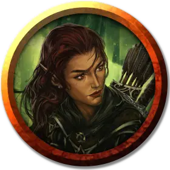

Йинра Эмбервинд
Yinra Emberwind
Средний Гуманоид (Эльф), нейтрально-добрый, именной НИП

Класс Доспеха 15 (проклёпанная кожа)
Хиты 16 (3к8 + 3)
Скорость 30 футов
| мод | спас | ||
|---|---|---|---|
| СИЛ | 11 | +0 | +0 |
| ЛОВ | 16 | +3 | +3 |
| ТЕЛ | 12 | +1 | +1 |
| мод | спас | ||
|---|---|---|---|
| ИНТ | 14 | +2 | +2 |
| МДР | 13 | +1 | +1 |
| ХАР | 11 | +0 | +0 |
Навыки Восприятие +3, Запугивание +4, Скрытность +5
Чувства тёмное зрение 60 футов, пассивное Восприятие 13
Языки Общий, Эльфийский
Опасность 1/2 (100 опыта)
Бонус мастерства +2
Особенности
Наследие фей. Йинра совершает с преимуществом спасброски от очарования, и магия не может его усыпить.
Острый слух и тонкий нюх. Йинра совершает с преимуществом проверки Мудрости (Восприятие), полагающиеся на слух или нюх.
Действия
Короткий меч. Рукопашная атака оружием: +5 к попаданию, досягаемость 5 футов, одна цель. Попадание: 6 (1к6 + 3) колющего урона.
Длинный лук. Дальнобойная атака оружием: +5 к попаданию, дистанция 150/600 футов, одна цель. Попадание: 7 (1к8 + 3) колющего урона.